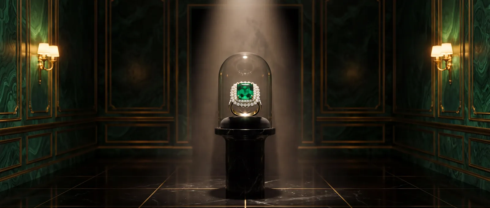

Room VI of VII
Smeraldo
Emerald cocktail ring
About Smeraldo
- 25.40 ct
- Muzo emerald
- 64
- diamonds, double halo
- Minor
- oil only
A green so warm it almost turns to gold. Cutters call what lives inside an emerald its garden; this one has a whole park.
Why it is rareNearly every emerald is oiled to hide its fissures. A Muzo stone this size with only minor oil is exceptional.
Muzo is the oldest emerald mine in Colombia and gives the warmest green. The rough was cut as a step cut, long and calm, so the eye walks into the stone like into a room.
The double halo is set low and close, a frame and not a crown. The ring was made to be worn on the right hand, where it is seen when you speak.
- Metal
- Platinum and yellow gold
- Emerald
- Emerald cut, 25.40 carats, Muzo, Colombia, minor oil
- Diamonds
- A double halo of 64 round brilliants
- Hours at the bench
- 410
- Room
- VI, the malachite room

